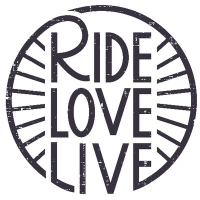

This year I will be I will be taking my Cannondale on a 545-mile bike ride from San Francisco to Los Angeles, as I participate in the AIDS/LifeCycle this year in order to raise awareness and funds for those individuals who are affected by HIV & AIDS. From May 31 - June 6. The journey is not going to be an easy one, but it is a challenge that I am ready to face in order to give back to the resilient community of men and women that have supported me in my own journey here in San Francisco.
I am proud to live in a city that takes incredible care of its citizens living with HIV/AIDS, however that care is not free. One of the two organizations that this ride helps fund is the San Francisco AIDS foundation, which has been providing services from prevention tools to long-term care for people living with HIV/AIDS in our community for over three decades. The SF AIDS foundation ensures that 100% of the funds raised on this ride go to those who are affected by HIV/AIDS.
This is my first year riding in this life-changing fundraiser, and I am setting a goal to raise $3,000. There is still no cure for HIV/AIDS and more than 1.2 million Americans live with this disease every day – I am riding for each and everyone one of them, and to raise awareness and funds to ensure that we live in a future where a cure to this debilitating disease exists.
So I am asking each of you, please support me in this endeavor, I can’t make this trek without you.
No donation is too small (or too big!) to support this amazing cause. Please click on the
Thank you for taking this journey with me – your support means everything to me, and . Let’s end HIV/AIDS once and for all!